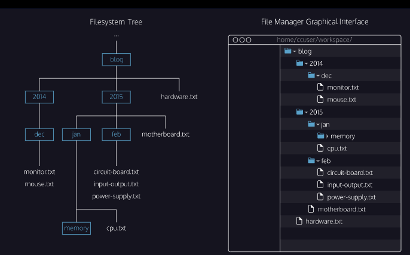

Web Development
| Popular Developer Resources | |
|---|---|
| As you go through the path, we’ll suggest certain resources for you to use, like articles, videos, tutorials, and documentation. Here are some additional resources that are considered groundbreaking, significant, or classics in the industry and will help you throughout your path: | |
| Recommended Books | |
|---|---|
| Sometimes it’s useful to have a couple of books on hand. The books featured in the Codecademy Frontend Developer Career Path are considered classics in the industry and many Codecademy learners (and employees!) have found them useful: | |
|
|
| Deploying Websites | |
|---|---|
| Different web hosting tools |
|
| GitHub Pages | GitHub pages, a tool provided by GitHub, lets you easily create and deploy a website online. GitHub allows you to store all the files and code for your website in a repository. You can then use GitHub Pages to generate a personal URL and share your site. |
Command Line
| Filesystem | |
|---|---|
A filesystem organizes a computer's files and directories into a tree structure.
|
|
|  | |
| Lists | |
|---|---|
| Command | ls |
| Notes | When you type ls, the command line looks at the directory you are in, and then "lists"
all the files and directories inside of it. In terminal, the first thing you see is $ -- This is called a shell prompt. It appears when the terminal is ready to accept a command. |
| Print Working Directory | |
|---|---|
| Command | pwd |
| Notes | pwd stands for "print working directory". It outputs the name of the directory you are
currently in, called the working directory. Together with ls, the pwd command is useful to show where you are in the filesystem. |
| Change Directory I | |
|---|---|
| Command | pwd |
| Notes | cd stands for "change directory". cd switches you into the directory you specify.
The cd command take a directory name as an argument and switches into that directory. To move up a directory, we use: $ cd .. The argument .. stands for the directory above the current working directory. |
| Change Directory II | |
|---|---|
| Command | pwd |
| Notes | To move across multiple directories with a single command, we can provide cd a relative
path to the directory. The relative path is a forward slash / separated list of all the
directories leading to the goal directory. We can also move up multiple directories using the .. argument. To go up two directories we use: ../.. |
| Make Directory | |
|---|---|
| Command | mkdir |
| Notes | The mkdir command stands for "make directory". It takes in a directory name as an argument and then creates a new directory in the current working directory. |
| Touch | |
|---|---|
| Command | touch |
| Notes | The touch command creates a new file inside the working directory. It takes in a filename as an argument and then creates an empty file with that name in the current working directory. |
| Helper Commands | |
|---|---|
| Commands |
|
| Notes | 'Tab' button can be used to autocomplete your command. When you are typing
the name of an exsiting file or directory, you can use 'Tab' to finish the
rest of the name. The 'up' and 'down' arrows can be used to cycle through your previous commands. 'up' will take you through your most recent and 'down' will take you back through to the most recent one. clear is used to clear your terminal which is useful when its full of previous commands and outputs. |
| Concatenate | |
|---|---|
| Commands | cat |
| Notes | cat short for concatenate, prints the contents of the selected text file to the terminal: cat hello_cli.txt Prints: Hello Command Line |
HTML
HTML Elements
| HTML Anatomy | |
|---|---|
HTML is composed of elements. These elements structure the webpage and its content.
The diagram above displays an HTML paragraph element which is made up of:
|
| Creating an HTML Document | |
|---|---|
|
|
| Adding HTML Comments | |
|---|---|
| Tag | Comments |
| Description | The commented out code goes in between the <!-- --> |
| Syntax | <!--CODE GOES HERE--> |
| Body | |
|---|---|
| Tag | <body></body> |
| Description | One of the key HTML elements used to build a webpage is the body element. Only content inside the opening and closing body tags can be displayed to the screen. |
| Syntax | <body> <p>What's up, doc?</p> </body> |
| HTML Structure | |
|---|---|
| Description | HTML is organized as a collection of family tree relationships. We an element is contained inside another element, it is considered the child of that element. The child element is said to be nested inside of the parent element. |
| Syntax | <body> <p>This paragraph is a child of the body</p> </body> |
| Headings | |
|---|---|
| Tag | <h1></h1> |
| Description | There are six different headings or heading elements. The following is the list of heading elements available in HTML. |
| Syntax |
|
| Division | |
|---|---|
| Tag | <div></div> |
| Description | div is short for "division" or a container that divides the page into sections. These sections are
very useful for grouping elements in your HTML together. divs don't inherently have a visual representation, but they are very useful when we want to apply custom styles to our HTML elements. <div>s allow us to group HTML elements to apply the same styles for all HTML elements inside. We can also style the <div> element as a whole. |
| Syntax |
<body> <div> <h1>Why use divs?</h1> <p>Great for grouping elements!</p> </div> </body> |
| Attributes | |
|---|---|
| Description | Attributes are content added to the opening tag of an element and can be used in several ways, from providing
information to changing styling. Attributes are made up of the following two parts:
|
| Syntax | <div id="intro"> <h1>Introduction</h1> </div> |
| Displaying Text | |
|---|---|
| Tag |
<p></p> <span></span> |
| Description |
|
| Syntax |
<div> <h1>Technology</h1> </div> <div> <p><span>Self-driving cars</span> are anticipated to replace up to 2 million jobs over the next two decades.</p> </div> |
| Styling Text | |
|---|---|
| Tag | <em></em> <strong></strong> |
| Description |
The <em> tag emphasizes text while the <strong> tag highlights important text.
|
| Syntax | <p><strong>The Nile River</strong> is the <em>longest</em> river in the world, measuring over 6,850 kilometers long (approximately 4,260 miles).</p> |
| Notes | test |
| Line Breaks | |
|---|---|
| Tag | <br> |
| Description | The spacing between code in an HTML file doesn't affect the positioning of elements in the browser. You can use HTML's
line break element <br> The line break element is only composed of a starting tag. It can be used anywhere within HTML code and a line break will appear in the browser. |
| Syntax | <p>The Nile River is the longest river <br> in the world, measuring over 6,850 <br> kilometers long (approximately 4,260 <br> miles).</p> |
| Unordered Lists | |
|---|---|
| Tag | <ul></ul> |
| Description | An unordered list tag <ul> is used to create a list of items in no particular order. An unordered
list outlines individual list items with a bullet point. The <ul> element should not hold raw text and won't automatically format raw text into an unordered list of items. Individual list items must be added to the unordered list using the <li> tag. The <li> or list item is used to describe an item in a list |
| Syntax | <ul> <li>Limes</li> <li>Tortillas</li> <li>Chicken</li> </ul> |
| Ordered Lists | |
|---|---|
| Tag | <ol></ol> |
| Description | Ordered lists <ol> are like unordered lists except that each list item is numbered. You can create the ordered list with the <ol> tag and then add individual list items to the list using <li> tags. |
| Syntax | <ol> <li>Preheat the oven to 350 degrees.</li> <li>Mix whole wheat flour, baking soda, and salt.</li> <li>Cream the butter, sugar in separate bowl.</li> <li>Add eggs and vanilla extract to bowl.</li> </ol> |
| Images | |
|---|---|
| Tag | <img/> |
| Description | The <img> tag allows you to add an image to a web page.
The <img> tag is a self-closing tag. Note the end of the
<img> tag has a forward slash. The <img> tag has a required attribute called src. The src attribute must be set to the image's source or the location of the image. The value of src must be the uniform resource locator (URL) of the image. |
| Syntax | <img> |
| Image Alts | |
|---|---|
| Description | The alt attribute, which means alternative text, brings meaning to the images
on our sites. The alt attribute can be added to the image tag just like
the src attribute. |
| Syntax | <img src="#" alt="A field of yellow sunflowers" /> |
| Notes |
|
| Videos | |
|---|---|
| Tag | <video/> |
| Description |
Like the <img> element, the <video> element requires a src attribute with a link to the video source. Unlike the <img> element however, the <video> element requires an opening and closing tag. After the src attribute, the width and height attributes are used to set the size of the video displayed in the browser. The controls attribute instructs the browser to include basic video controls such as pause/play |
| Syntax | <video src="myVideo.mp4" width="320" height="240" controls>Video not supported</video> |
CSS
CSS Basics
CSS Anatomy |
|
|---|---|
Two syntaxes for writing CSS
https://www.codecademy.com/resources/docs/css/anatomy?page_req=catalog Both syntaxes contain declarations. Declarations are the core of CSS. They apply a style to the selected element. |
|
| CSS ruleset terms | |
| Tag | test |
| Description | test |
| Syntax | test |
| Notes | test |
| NoteTitle | |
|---|---|
| Tag | test |
| Description | test |
| Syntax | test |
| Notes | test |
| NoteTitle | |
|---|---|
| Tag | test |
| Description | test |
| Syntax | test |
| Notes | test |
| NoteTitle | |
|---|---|
| Tag | test |
| Description | test |
| Syntax | test |
| Notes | test |